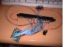

X68000用LANカード
ある同人誌を見ていたらEthernet ControllerのRTL8019AS（蟹さん）を使った製作記事があって、なんとなく何か作りたくなった。某プロジェクトでちょうどXILINXのXC9536を使って石の使い方やVHDLの書き方もなんとなくわかったので、なんか工作のネタを探していたところ、友人のX68K（NetBSD稼動中）にEthernetがついてないことをネタにしようと思いついた。
すでにNeptune-Xなるものが存在することは知っていたのでその回路をXC95??あたりに焼いて、RTL8019ASを使ったカードを買い、分解してやればなんとかなると構想は順調に進んだ（え！）。
ここで、一番入手が困難な部品はX68K用のユニバーサル基盤でしょう。PC9800用の基盤が使えると言ううわさも聞きましたが、なぜかそれも入手困難.、しかも高価でお店で悩んでいると、目の前に100ピンのカードエッジ（のような）だけの基盤を見つけ、普通のユニバーサル基盤とともに購入。これらをエポキシ接着剤で接着すればX68Kにつながるユニバーサル基盤の出来上がりとなる。
次に、RTL8019ASや20MHｚのクリスタル、シリアルEEPROM、トランス、モジュラソケットなどは秋月電子などでも手に入りますが、これだけそろえるならそこら辺のお店で売っているISAのLANカードを買うほうが安い。
しかし、その場合表面実装0.65mmピッチ100ピンのICを基盤からはがす必要があります。昔は１本づつ先の細い針ではずしましたが、ここでは低融点半田を使った取り外しキットを使いました。サンハヤトなどがだしてるやつです。これを使って結構簡単にはずすことができました。
あ、そうそう、基盤から石をはずす前にISAのカードがささるパソコンを使ってカードの設定を行いましょうね。いまどきのカード（ISAがいま時かどうかはさておいて）はデフォルトはPNPモードなのでそれを切ってIRQ10、I/Oベースアドレスを300Hにしましょう。
CPLDは入手性からXC9572-15PC84Cを使いました。しかも、これならPLCCソケットが使えて工作が楽です。Neptune-Xの回路に使うには規模は余裕ですが、ピン数が足りません。仕方がないので、アドレスバスのバッファーは外付けで74LS245を二つ使いました。正直、バッファーが要るかどうかよくわからないのですが、、、。
さて、CPLDに書きこむ回路なんですが、Ａｐｐｌａｕｓｅさんが作ったNeptune-XのABELのソースをいただいて、今回使うXC9572用にちょっと修正して使わせていただきました。初期の目標は、VHDLを使って書くはずだったのですが、基盤チェック用に借りてきたX68000 ACE HDが借りに行ったその日に電源が壊れて（涙）、チェックができなくなりました。もう、冒険はできないので上記のソースを使わせていただきました（これは正解でした。これがないと基盤の問題か、ロジックの問題かで悩んだでしょう）。VHDL使えなかったのがちょっと心残りかな？
まず、導通チェックを行います。これでOKならお客さん（笑）のお家にGO!。チェックプログラムを動かして確認、しかし、
疑似ＩＳＡ上にNE-x000ではなさそうなカードを検出しました
データバスの配線の確認をしてください。
なお、Neptune-X ver0.3以下の場合は、ver0.4以上にしてください。
はぁー。自宅に戻って再びチェックすると接触抵抗が100オームの場所があるじゃありませんか。UEW線がうまく引っ付いてなかったみたいですね。これぐらいの抵抗値だとテスターの導通チェックのブザーは鳴ってしまうのでした。
今度はもっとちゃんとチェックしました。秋月電子のH8TinyCPUのキット（AKI-3664フラットマイコンキット）をつないでRTL8019ASのレジスターをアクセスするプログラムを作りました。最初からやってりゃよかった。
最初はなぜか思う値が出なくて、悩んだ挙句、「あ、ビッグエンディアンやん！」てな感じで上位８ビットを見たらOKでした。自分は昔からリトルエンディアンに犯された体なもんで、はまりました。
再び友人宅へ。今度は割り込みのチェックで落ちる！今度のカードは少し自信があったのになぁ。現場でチェックするも、原因がつかめず。なんか不安定。しばらく抜き差しすると動いちゃった！！！原因不明。友人によると、カードをさすスロットの場所なんか変えたとか？もしかしたらカードエッジ部分の接触不良だったのかな？まあ、いいか。
いろいろ楽しかったです。またネタください（をぃ）。でも、面白い（うけを狙える）ネタでないと断ります（ここら辺がわからない人が私の周りに多くて、、、。仕事（まずまちがいなく）を持ってこられてもねぇ。おまえ暇だろと言われても、暇じゃないのよ。Neptune-Xも深夜にやってたし）。
撮影が下手ですみません。
|  | ||||
|
部品面 |
裏 |
自作CPLDライター |
部品取外し後 |
チェック用H8 |
Ａｐｐｌａｕｓｅさん、ABELのソースをこころよく使わせていただいてありがとうございます。
0-chan、またネタください（そればっか）。
{kind=link}
{kind=link}
{kind=link}
{kind=link}
{kind=link}